Newton Method
This tour explores the use of the Newton method for the unconstrained optimization of a smooth function
Contents
Installing toolboxes and setting up the path.
You need to download the following files: signal toolbox and general toolbox.
You need to unzip these toolboxes in your working directory, so that you have toolbox_signal and toolbox_general in your directory.
For Scilab user: you must replace the Matlab comment '%' by its Scilab counterpart '//'.
Recommandation: You should create a text file named for instance numericaltour.sce (in Scilab) or numericaltour.m (in Matlab) to write all the Scilab/Matlab command you want to execute. Then, simply run exec('numericaltour.sce'); (in Scilab) or numericaltour; (in Matlab) to run the commands.
Execute this line only if you are using Matlab.
getd = @(p)path(p,path); % scilab users must *not* execute this
Then you can add the toolboxes to the path.
getd('toolbox_signal/'); getd('toolbox_general/');
Newton Method for Unconstrained Problems
We test here Newton method for the minimization of a 2-D function.
We define a highly anisotropic function, the Rosenbrock function
% \[ g(x) = (1-x_1)^2 + 100 (x_2-x_1^2)^2 \]
f = @(x1,x2)(1-x1).^2 + 100*(x2-x1.^2).^2;
The minimum of the function is reached at \(x^\star=(1,1)\) and \(f(x^\star)=0\).
Evaluate the function on a regular grid.
x1 = linspace(-2,2,150); x2 = linspace(-.5,3,150); [X2,X1] = meshgrid(x2,x1); F = f(X1,X2);
3-D display.
clf; surf(x2,x1, F, perform_hist_eq(F, 'linear') ); shading interp; camlight; axis tight; colormap jet;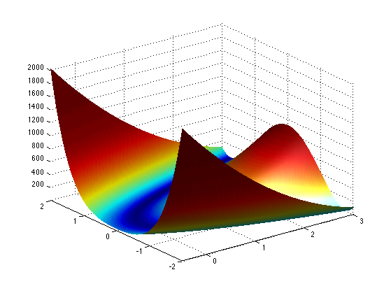
2-D display (histogram equalization helps to better visualize the iso-contours).
clf; imageplot( perform_hist_eq(F, 'linear') ); colormap jet(256);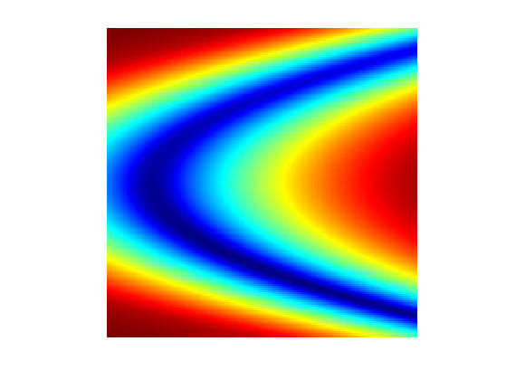
Gradient descent methods, that only use first order (gradient) information about \(f\) are not able to efficiently minimize this function because of its high anisotropy.
Define the gradient of \(f\) \[ \nabla g(x) = \pa{ \pd{g(x)}{x_1}, \pd{g(x)}{x_2} } = \pa{ 2 (x_1-1) + 400 x_1 (x_1^2-x_2), 200 (x_2-x_1^2) } \in \RR^2. \]
gradf = @(x1,x2)[2*(x1-1) + 400*x1.*(x1.^2-x2); 200*(x2-x1.^2)]; Gradf = @(x)gradf(x(1),x(2));
Compute its Hessian \[ Hf(x) = \begin{pmatrix} \frac{\partial^2 g(x)}{\partial x_1^2} & \frac{\partial^2 g(x)}{\partial x_1 \partial x_2} \\ \frac{\partial^2 g(x)}{\partial x_1 \partial x_2} & \frac{\partial^2 g(x)}{\partial x_2^2} \end{pmatrix} = \begin{pmatrix} 2 + 400 (x_1^2-x_2) + 800 x_1^2 & -400 x_1 \\ -400 x_1 & 200 \end{pmatrix} \in \RR^{2 \times 2} \]
hessf = @(x1,x2)[2 + 400*(x1.^2-x2) + 800*x1.^2, -400*x1; ...
-400*x1, 200];
Hessf = @(x)hessf(x(1),x(2));
The Newton descent method starting from some \(x^{(0)} \in \RR^2\), \[ x^{(\ell+1)} = x^{(\ell)} - Hf( x^{(\ell)} )^{-1} \nabla f(x^{(\ell)}). \]
Exercice 1: (check the solution) Implement the Newton algorithm. Display the evolution of \(f(x^{(\ell)})\) and \(\norm{x^{(\ell)}-x^{(+\infty)}}\) during the iterations.
exo1;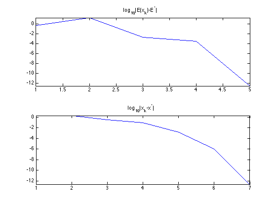
Exercice 2: (check the solution) Display the evolution of \(x^{(\ell)}\), from several starting points.
exo2;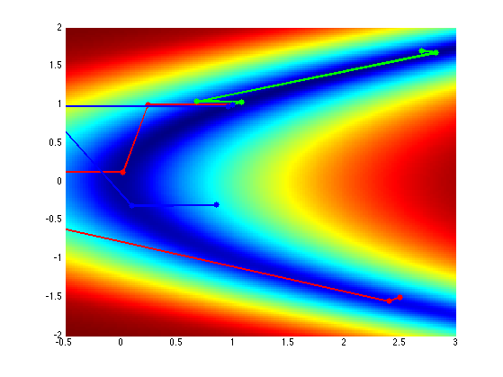
Gradient and Divergence of Images
Local differential operators like gradient, divergence and laplacian are the building blocks for variational image processing.
Load an image \(g \in \RR^N\) of \(N=n \times n\) pixels.
n = 256;
g = rescale( load_image('lena',n) );
Display it.
clf; imageplot(g);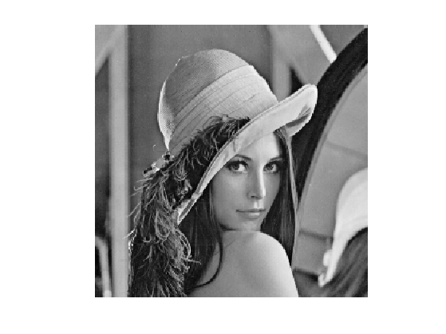
For continuous functions, the gradient reads \[ \nabla g(x) = \pa{ \pd{g(x)}{x_1}, \pd{g(x)}{x_2} } \in \RR^2. \] (note that here, the variable \(x\) denotes the 2-D spacial position).
We discretize this differential operator using first order finite differences. \[ (\nabla g)_i = ( g_{i_1,i_2}-g_{i_1-1,i_2}, g_{i_1,i_2}-g_{i_1,i_2-1} ) \in \RR^2. \] Note that for simplity we use periodic boundary conditions.
Compute its gradient, using finite differences.
s = [n 1:n-1]; grad = @(f)cat(3, f-f(s,:), f-f(:,s));
One thus has \( \nabla : \RR^N \mapsto \RR^{N \times 2}. \)
v = grad(g);
One can display each of its components.
clf; imageplot(v(:,:,1), 'd/dx', 1,2,1); imageplot(v(:,:,2), 'd/dy', 1,2,2);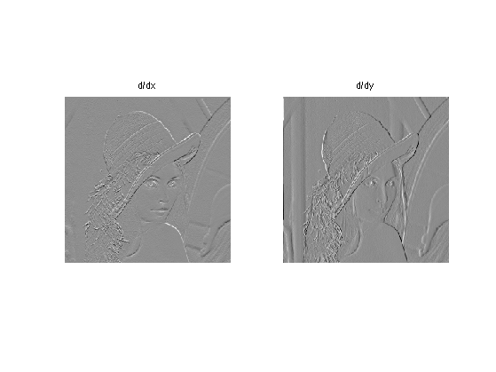
One can also display it using a color image.
clf; imageplot(v);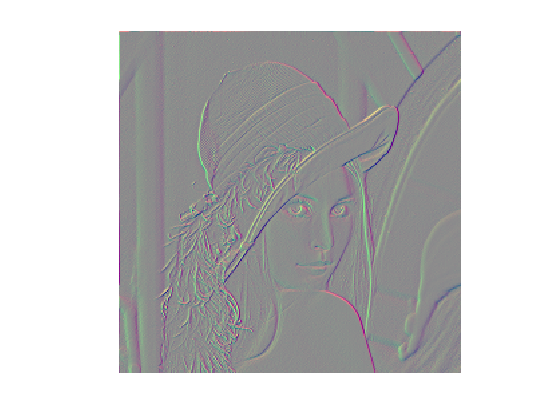
One can display its magnitude \(\norm{\nabla g(x)}\), which is large near edges.
clf; imageplot( sqrt( sum3(v.^2,3) ) );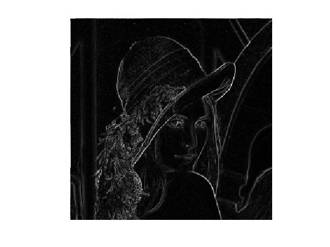
The divergence operator maps vector field to images. For continuous vector fields \(v(x) \in \RR^2\), it is defined as \[ \text{div}(v)(x) = \pd{v_1(x)}{x_1} + \pd{v_2(x)}{x_2} \in \RR. \] (note that here, the variable \(x\) denotes the 2-D spacial position). It is minus the adjoint of the gadient, i.e. \(\text{div} = - \nabla^*\).
It is discretized, for \(v=(v^1,v^2)\) as \[ \text{div}(v)_i = v^1_{i_1+1,i_2} - v^1_{i_1,i_2} + v^2_{i_1,i_2+1} - v^2_{i_1,i_2} . \]
t = [2:n 1]; div = @(v)v(t,:,1)-v(:,:,1) + v(:,t,2)-v(:,:,2);
The Laplacian operatore is defined as \(\Delta=\text{div} \circ \nabla = -\nabla^* \circ \nabla\). It is thus a negative symmetric operator.
delta = @(f)div(grad(f));
Display \(\Delta f_0\).
clf; imageplot(delta(g));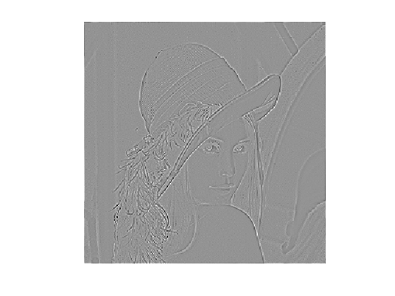
Check that the relation \( \norm{\nabla f} = - \dotp{\Delta f}{f}. \)
dotp = @(a,b)sum(a(:).*b(:));
fprintf('Should be 0: %.3i\n', dotp(grad(g), grad(g)) + dotp(delta(g),g) );
Should be 0: 000
Newton Method in Image Processing
We consider now the problem of denoising an image \(y \in \RR^N\) where \(N = n \times n\) is the number of pixels (\(n\) being the number of rows/columns in the image).
Add noise to the clean image, to simulate a noisy image \(y\).
sigma = .1; y = g + randn(n)*sigma;
Display the noisy image \(y\).
clf; imageplot(clamp(y));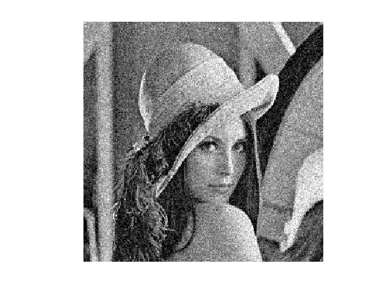
Denoising is obtained by minimizing the following functional \[ \umin{x \in \RR^d} g(x) = \frac{1}{2} \norm{ y-x}^2 + \la J(x) \] where \(J(x)\) is a smoothed total variation of the image. \[ J(x) = \sum_i \norm{ (G x)_i }_{\epsilon} \] where \( (Gx)_i \in \RR^2 \) is an approximation of the gradient of \(x\) at pixel \(i\) and for \(u \in \RR^2\), we use the following smoothing of the \(L^2\) norm in \(\RR^2\) \[ \norm{u}_\epsilon = \sqrt{ \epsilon^2 + \norm{u}^2 }, \] for a small value of \(\epsilon>0\).
Value for \(\lambda\).
lambda = .3/5;
Value for \(\epsilon\).
epsilon = 1e-3;
TV norm.
Amplitude = @(u)sqrt(epsilon^2 + sum(u.^2,3)); J = @(x)sum(sum(Amplitude(grad(x))));
Function to minimize.
f = @(x)1/2*norm(x-y,'fro')^2 + lambda*J(x);
The gradient of the functional read \[ \nabla g(x) = x-y + \lambda \nabla J(x) \] where the gradient of the smoothed TV norm is \[ \nabla J(x)_i = G^*( u ) \qwhereq u_i = \frac{ (G x)_i }{\norm{ (G x)_i }_\epsilon} \] where \(G^*\) is the adjoint operator of \(G\) which corresponds to minus a discretized divergence.
Define the gradient of TV norm. Note that div implement \(-G^*\).
Normalize = @(u)u./repmat(Amplitude(u), [1 1 2]); GradJ = @(x)-div( Normalize(grad(x)) );
Gradient of the functional.
Gradf = @(x)x-y+lambda*GradJ(x);
The gradient of the functional can be written as \[ \nabla g(x) = x - y + G^* \circ \delta_{A(x)} \circ G (x) \] where \(A(x) \in \RR^N\) is the norm of the gradient \[ A(x)_i = \norm{(G u)_i} \] and where, for \(x \in \RR^N\) and \( a \in \RR^{N} \), \[ \de_{a}(u)_i = \frac{u_i}{ \sqrt{\epsilon^2+a_i^2} }. \]
A = @(x)sqrt(sum(grad(x).^2, 3)); delta = @(a,u)u./sqrt( epsilon^2 + repmat(a.^2,[1 1 2]) );
This shows that the Hessian of \(f\) is \[ Hf(x) = \text{Id} + G^* \circ \delta_{d(x)} \circ G + G^* \circ \Delta_{x} (G(x)) \] where \(\Delta_{x}(u) \) is the derivative of the mapping \( x \mapsto \delta_{d(x)}(u) \).
Note that since \(f\) is strictly convex, \(Hf(x)\) is a positive definite matrix.
We use a quasi-Newton scheme \[ x^{(\ell+1)} = x^{(\ell)} - H_\ell^{-1} \nabla f(x^{(\ell)}), \] where \( H_\ell \) is an approximation of the Hessian \(H f(x^{(\ell)})\).
We define this approximation as \[ H_\ell = \tilde H f(x^{(\ell)}) \qwhereq \tilde Hf(x) = \text{Id} + G^* \circ \delta_{x} \circ G \]
\(H_\ell\) is a symmetric positive definite matrix, that is bounded by bellow by the identity, which ensures the convergence of the method.
Implement \(\tilde H f(x)\). Note that is parameterized by \(a=A(x)\).
H = @(z,a)z - lambda*div( delta(a, grad(z)) );
Implement \(\tilde H f(x)^{-1}\) using a conjugate gradient. Note that it takes as argument a previous solution u_prev.
flat = @(x)x(:); flatI = @(x)reshape(x,[n,n]); tol = eps; maxit = 40; Hinv = @(u,a,u_prev)cgs(@(z)flat(H(flatI(z),a)), flat(u),tol,maxit,[],[],flat(u_prev));
Initialize the algorithm \(x^{(0)} = y\).
x = y;
Compute the vector \(d = H_\ell^{-1} \nabla f(x^{(\ell)})\).
Important: to get read of the warning message, you should use the code as this:
d = zeros(n); % replace thie line by the previous iterate d value
[d,~] = Hinv(Gradf(x), A(x), d);
d = flatI(d);
Compute \(x^{(\ell+1)} = x^{(\ell)} - d\).
x = x - d;
Exercice 3: (check the solution) Implement the Newton descent algorithm.
exo3;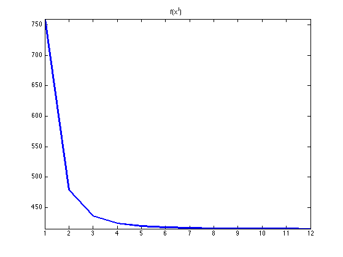
Display the result.
clf; imageplot(clamp(x));
Exercice 4: (check the solution) Compare the Newton descent with the gradient descent with a fixed step size, in term of decay of the energy.
exo4;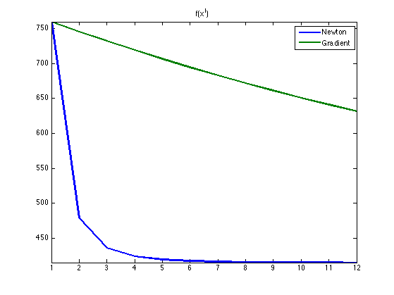
Exercice 5: (check the solution) The direct comparison between gradient method and Newton is not fair in term of iteration count. Indeed, and iteration of Newton requires several steps of conjugate gradient, which takes some time. Try to set-up a fair comparison benchmark that takes into account the runing time of the methods. Pay a particular attention to the number of steps (or the tolerance criterion) that parameterize cgs.
exo5;